![]()
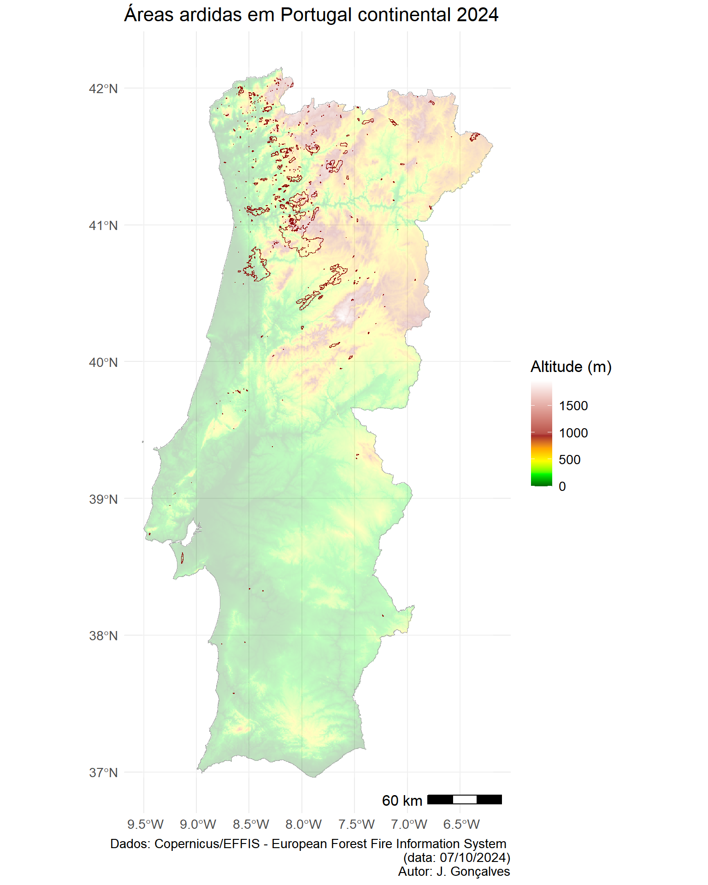
Aviso / Disclaimer
Esta análise é preliminar e reflete os dados a que os autores tiveram acesso à data de criação deste documento. Esta análise não é definitiva e os valores poderão mudar assim que atualizações e modificações dos dados forem disponibilizadas (por razões diversas e fora do controlo dos autores).
Atualizações deste relatório serão disponibilizadas assim que modificações relevantes dos perímetros de área ardida fornecidos pelo Sistema Europeu Copernicus/EFFIS forem disponibilizados.
As fontes de dados podem estar sujeitas a variações temporais e espaciais, imprecisões ou inexatidões de ordem diversa assim como a erros inerentes aos processos de recolha e processamento de informação completamente alheios aos autores.
Os autores deste relatório não assumem qualquer responsabilidade por decisões ou ações tomadas com base nos dados, análises ou conclusões aqui apresentadas sem a devida consideração das limitações mencionadas.
O uso inadequado ou a interpretação incorreta dos resultados, especialmente sem um conhecimento profundo das incertezas associadas, é da inteira responsabilidade de quem os utiliza. Recomenda-se que os resultados apresentados sejam sempre analisados ou interpretados com cautela, e que, se necessário, sejam complementados por outras fontes de informação e validações adicionais.
Info
Se está a ver este relatório em um smartphone ou tablet, experimente rodar o ecrã para o formato horizontal para aceder ao índice de conteúdos (do lado direito do ecrã).
Código fonte das análises
O código R utilizado para produzir estas análises está disponível no link:
https://github.com/SeverusPT/AnaliseAreaArdida2024
Agradecimentos
Este relatório foi financiado pela Fundação para a Ciência e a Tecnologia (FCT) no âmbito do projeto SeverusPT — “Um serviço e produto de dados baseados na web para a avaliação e previsão de severidade de incêndio em Portugal continental”.
- Website: https://severus.pt/
- DOI: https://doi.org/10.54499/PCIF/RPG/0170/2019
- Referência FCT: PCIF/RPG/0170/2019

1. Material e métodos
1.1. Fontes de dados espaciais/geográficos
Para as análises realizadas neste relatório foram usados os seguintes conjuntos de dados:
Áreas ardidas do Sistema Europeu Copernicus EFFIS (European Forest Fire Information System): link geral | link dados
Carta de Uso e Ocupação do Solo - 2018: link geral | link dados
Carta de Ocupação do Solo Conjuntural - 2024 Pré-Verão DGT: link geral | link dados
Carta Administrativa Oficial de Portugal - CAOP2023 (Continente): link geral | link dados
Rede Nacional de Áreas Protegidas (RNAP)1: link geral | link dados
Zonas de Proteção Especial da Diretiva Aves (ZPE) - RN2000: link geral | link dados
Sítios da Diretiva Habitats (SIC) - RN2000: link geral | link dados
Estradas e vias de trânsito - OpenStreetMaps PT: link geral | link dados
Global ML Building Footprints (área/polígonos de edifícios): link geral-1 | link geral-2 | link dados
Rede Hidrográfica – EU-Hydro River Network Database 2006-2012 (NUTS: PT1): link geral | link dados
Dados Censos 2021 - BGRI: Link geral | link dados
1.2. Métodos
Para a quantificação da área ardida, foram realizadas análises espaciais recorrendo a ferramentas de Sistemas de Informação Geográfica (SIG). Estas análises foram desenvolvidas na plataforma de computação RStudio utilizando a linguagem R, permitindo assim integrar, manipular, visualizar e processar grandes volumes de dados geoespaciais. As ferramentas empregadas para este fim incluíram uma combinação de bibliotecas especializadas no tratamento de dados vetoriais e raster, assim como para a geração de gráficos e tabelas.
Para o geoprocessamento e análise de dados vetoriais, foi utilizado o pacote sf, que facilitou o manuseio e a análise de dados espaciais em formato vetorial. Em complemento, os pacotes terra, tidyterra, raster e fasterize foram usados para o geoprocessamento e análise de dados raster, oferecendo funcionalidades robustas para a manipulação de dados em grande escala.
A visualização de dados geoespaciais foi aprimorada com o pacote ggmap, que permitiu a inclusão de basemaps em formato raster. Além disso, o pacote tidyverse foi utilizado para a manipulação, análise e agregação de dados, permitindo uma estrutura de trabalho eficiente para transformar e analisar os dados espaciais.
Para a renderização de gráficos e mapas, os pacotes ggplot2 e patchwork foram aplicados, proporcionando a criação de visualizações detalhadas e a composição de gráficos e mapas. Finalmente, a formatação e renderização de tabelas foi feita através dos pacotes knitr, kableExtra e flextable, garantindo a apresentação dos resultados tabulares.
Todo o fluxo de trabalho visou garantir a precisão e repetibilidade da análise espacial e estatística dos dados, permitindo uma compreensão abrangente das áreas ardidas e a geração de outputs rigorosos e acessíveis.
2. Área ardida em Portugal continental (2024)
Síntese geral
À data de 07/10/2024 a área ardida no ano de 2024, de acordo com os dados do Sistema Copernicus/EFFIS (European Forest Fire Information System) é igual a 160,348 hectares. De acordo com esta informação, no mês de setembro arderam 150,662 hectares dos quais 137,372 hectares ocorreram após o dia 15 de setembro de 2024 (inclusive; ou seja, correspondente 85.7% do total anual).
Segundo os dados do EFFIS, foram contabilizados 677 ocorrências de incêndio das quais 174 ocorreram após o dia 15 de setembro (inclusive), correspondente a 25.7% do total anual.
Em termos de afetação potencial de áreas com estatuto de conservação/proteção, um total de 13,342 hectares ocorreram em Rede Nacional de Áreas Protegidas (RNAP), 38,914 hectares em Sítios de Interesse Comunitário da Rede Natura 2000, e 1,477 hectares em Zonas de Proteção Especial também em contexto da Rede Natura 2000.
Em termos de afetação potencial dos cursos de água e, considerando uma estratificação pela hierarquia de Strahler 2, foram quantificados os seguintes impactos em termos de comprimento total por tipo de rio (classes de Strahler de 1 a 6):
- Classe 1: 437.8 km
- Classe 2: 142.5 km
- Classe 3: 74.1 km
- Classe 4: 87.1 km
- Classe 5: 23.8 km
- Classe 6: 0.1 km .
De acordo com dados do Instituto Nacional de Estatística (INE), e considerando as subsecções estatísticas constantes da Base Geográfica de Referenciação de Informação (BGRI) para os Censos de 2021, um total de 138,260 habitantes foram potencialmente afetados pelos incêndios de 2024, como residentes dentro ou nas imediações dos perímetros ardidos, com níveis muito diferenciados de impacto direto ou indireto e que os dados a que tivemos acesso não permitem estimar. Segundo este conjunto de dados também, um total de 85,986 alojamentos poderão ter sido impactados, com graus de afetação direta ou indireta muito diferenciados e que os dados não permitem caracterizar, estando localizados dentro ou nas imediações dos perímetros ardidos.
De acordo com o conjunto de dados aberto de edíficos MS Buildings Footprint, que mistura todas as tipologias de edificado (e.g., habitacional, industrial, serviços), um total de 73,015 edifícios foram potencialmente afetados pelos incêndios de 2024 com níveis muito diferenciados de impacto (que os dados a que tivemos acesso não permitem estimar), estando incluídos dentro dos perímetros de área ardida mapeados pelo sistema EFFIS.
Segundo o conjunto de dados aberto OSM – OpenStreetMap – sobre vias de trânsito/acesso/circulação e, agregando todas as tipologias existentes nesta base de dados (e.g., auto-estradas, estradas nacionais, municipais, caminhos, trilhos), foram potencialmente afetados 7,051 Km de vias.
A distribuição das ocorrências de incêndio por dimensão da área ardida é mostrada na tabela abaixo. Nesta são apresentadas a frequência absoluta e relativa (%) para o ano de 2024. Para efeito de análise mais detalhada, foram separadas as ocorrências na base de dados do EFFIS a partir de 15 de setembro. Neste caso é mostrada a frequência aboluta e relativa (tendo como denominador as ocorrências em cada categoria de dimensão da área ardida).
| Classe | Nr. ocorrências | Percentagem 2024 | Nr. ocorrências após 15 set | Percentagem classe após 15 set |
|---|---|---|---|---|
| 0-10 ha | 388 | 57.3 | 71 | 18.3 |
| 10-100 ha | 212 | 31.3 | 54 | 25.5 |
| 100-250 ha | 28 | 4.1 | 14 | 50.0 |
| 250-500 ha | 16 | 2.4 | 11 | 68.8 |
| 500-1000 ha | 11 | 1.6 | 8 | 72.7 |
| 1000-2500 ha | 12 | 1.8 | 7 | 58.3 |
| 2500-5000 ha | 5 | 0.7 | 4 | 80.0 |
| 5000-10000 ha | 2 | 0.3 | 2 | 100.0 |
| >10000 ha | 3 | 0.4 | 3 | 100.0 |
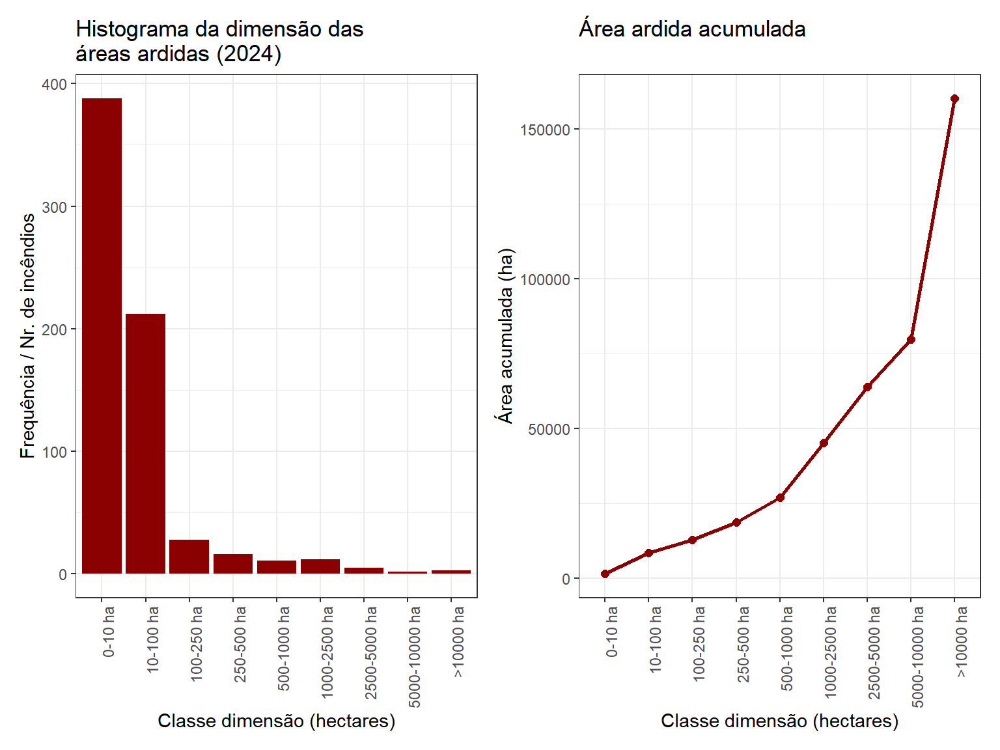
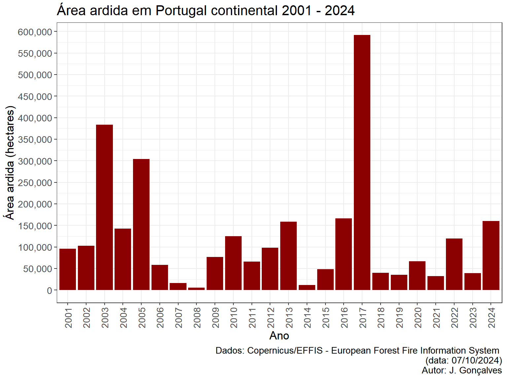
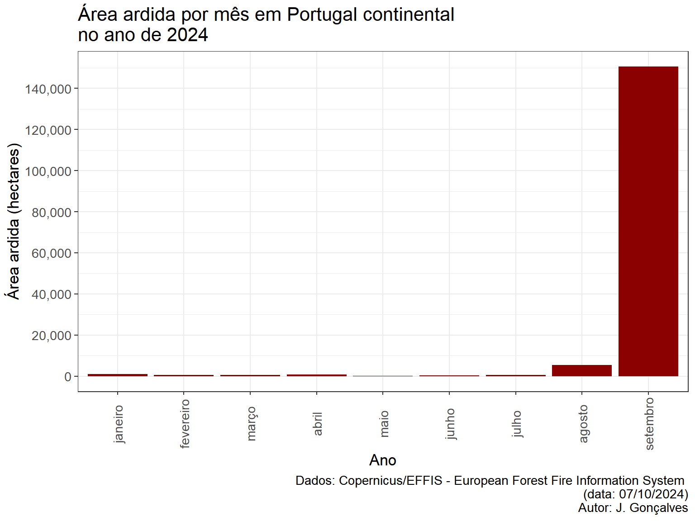
2.1. Área ardida por classe de uso/coberto do solo
Tendo por base os dados de área ardida foi elaborada uma análise relativamente à distribuição dessa em função das categorias de uso/coberto do solo. Para esse efeito recorreu-se a duas bases de dados de referência para Portugal continental:
Carta de Ocupação do Solo Conjuntural para o ano de 2024 (COSc 2024, período pré-verão; Fonte: DGT) e a,
Carta de Uso e Ocupação do Solo (COS 2018, versão 2; Fonte: DGT).
No primeiro conjunto de dados – COSc 2024 – procurou-se a elevada atualidade desta base de dados para efeito da compreensão das categorias mais afetadas pelos incêndios. Enquanto que para a COS 2018 buscou-se uma complementaridade das fontes de informação, assim como maior resolução temática deste conjunto de dados (i.e., maior número de categorias e, portanto, maior grau de discriminação dos tipos de uso/coberto do solo).
Os resultados desta análise são apresentados nas subsecções seguintes tendo por base cada um destes datasets de uso/ocupação do solo.
2.1.1. Carta de Uso e Ocupação do Solo conjuntural - COSc 2024
| Código | Classe uso/coberto | Área ardida (ha) | % ardida |
|---|---|---|---|
| 410 | Matos | 59455.3 | 37.1 |
| 312 | Eucalipto | 37664.7 | 23.5 |
| 420 | Veg. herbácea esp. | 18654.9 | 11.6 |
| 313 | Outras folhosas | 14088.0 | 8.8 |
| 321 | Pinheiro bravo | 12203.3 | 7.6 |
| 213 | Outras áreas agrícolas | 9535.6 | 6.0 |
| 500 | Sup. s/ vegetação | 3939.0 | 2.5 |
| 100 | Artificializado | 1618.1 | 1.0 |
| 211 | Culturas anuais out/inv | 1249.1 | 0.8 |
| 212 | Culturas anuais pri/ver | 1042.3 | 0.7 |
| 323 | Outras resinosas | 297.8 | 0.2 |
| 311 | Sobreiro e azinheira | 203.4 | 0.1 |
| 620 | Água | 144.0 | 0.1 |
| 322 | Pinheiro manso | 103.2 | 0.1 |
| 610 | Zonas húmidas | 21.0 | 0.0 |
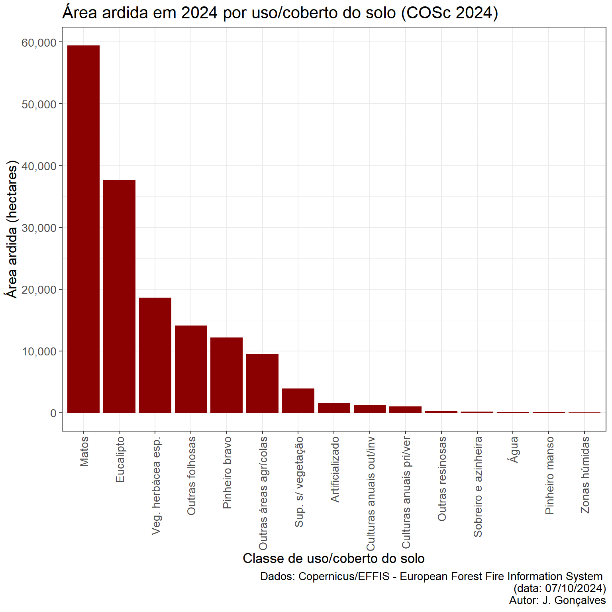
2.1.2. Carta de Ocupação do Solo - COS 2018
| Classe uso/coberto | Área ardida (ha) | % ardida |
|---|---|---|
| Matos | 45181.3 | 28.2 |
| Florestas de eucalipto | 42594.8 | 26.5 |
| Florestas de pinheiro bravo | 30513.4 | 19.0 |
| Florestas de outras folhosas | 8511.5 | 5.3 |
| Culturas temporárias de sequeiro e regadio | 8302.0 | 5.2 |
| Florestas de outros carvalhos | 6237.1 | 3.9 |
| Mosaicos culturais e parcelares complexos | 3024.3 | 1.9 |
| Agricultura com espaços naturais e seminaturais | 2436.5 | 1.5 |
| Vegetação esparsa | 2240.7 | 1.4 |
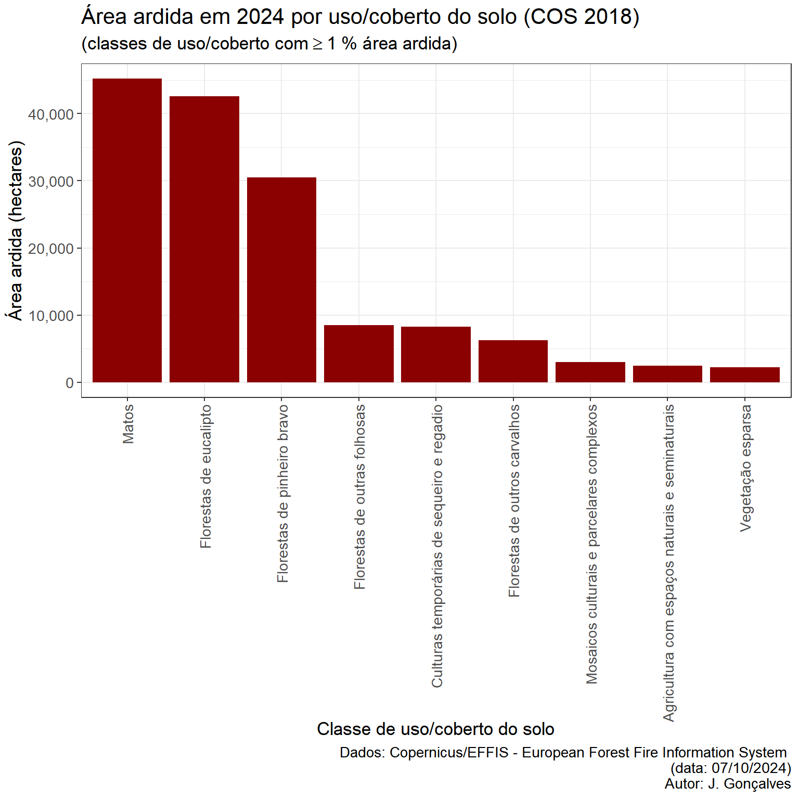
3. Área ardida por município
Nesta secção do relatório, apresentamos uma análise detalhada das áreas ardidas no ano de 2024, com enfoque nos municípios de Portugal continental. O objetivo desta análise é avaliar a distribuição das áreas afetadas pelos incêndios em cada município.
| Município | Área ardida 2024 (hectares) | % área do concelho |
|---|---|---|
| Castro Daire | 19999.5 | 52.8 |
| São Pedro do Sul | 13984.8 | 40.1 |
| Albergaria-a-Velha | 9793.4 | 61.7 |
| Águeda | 9149.6 | 27.3 |
| Baião | 6871.1 | 39.4 |
| Arouca | 6729.0 | 20.4 |
| Penalva do Castelo | 5843.4 | 43.5 |
| Sever do Vouga | 5702.6 | 43.9 |
| Vila Pouca de Aguiar | 5661.3 | 13.0 |
| Mangualde | 5281.7 | 24.1 |
| Carregal do Sal | 4521.8 | 38.7 |
| Cinfães | 4390.4 | 18.3 |
| Cabeceiras de Basto | 4346.8 | 18.0 |
| Amarante | 4213.5 | 14.0 |
| Marco de Canaveses | 3896.5 | 19.3 |
| Fafe | 3160.0 | 14.4 |
| Gondomar | 3027.4 | 22.9 |
| Nelas | 2934.3 | 23.3 |
| Arcos de Valdevez | 2681.9 | 6.0 |
| Resende | 2538.5 | 20.6 |
| Oliveira de Azeméis | 2220.1 | 13.8 |
| Póvoa de Lanhoso | 2200.9 | 16.3 |
| Celorico de Basto | 2078.8 | 11.5 |
| Chaves | 2011.7 | 3.4 |
| Penafiel | 1892.5 | 8.9 |
| Paredes | 1707.5 | 10.9 |
| Miranda do Douro | 1631.0 | 3.3 |
| Vila Nova de Paiva | 1611.0 | 9.2 |
| Vila Real | 1235.4 | 3.3 |
| Fundão | 1052.3 | 1.5 |
| Ribeira de Pena | 1005.6 | 4.6 |
| Guimarães | 995.2 | 4.1 |
| Vinhais | 944.4 | 1.4 |
| Tábua | 873.9 | 4.4 |
| Valença | 691.2 | 5.9 |
| Lamego | 660.3 | 4.0 |
| Sesimbra | 620.4 | 3.2 |
| Felgueiras | 605.7 | 5.2 |
| Peso da Régua | 590.3 | 6.2 |
| Melgaço | 574.2 | 2.4 |
| Vale de Cambra | 570.9 | 3.9 |
| Vimioso | 537.8 | 1.1 |
| Vieira do Minho | 505.7 | 2.3 |
| Bragança | 479.6 | 0.4 |
| Vila Verde | 473.1 | 2.1 |
| Santo Tirso | 467.3 | 3.4 |
| Oliveira do Hospital | 447.6 | 1.9 |
| Montalegre | 411.0 | 0.5 |
| Ponte da Barca | 400.9 | 2.2 |
| Castelo Branco | 391.6 | 0.3 |
| Arganil | 323.3 | 1.0 |
| Alijó | 319.8 | 1.1 |
| Paços de Ferreira | 311.1 | 4.4 |
| Terras de Bouro | 310.2 | 1.1 |
| Seixal | 246.4 | 2.6 |
| Ponte de Lima | 236.3 | 0.7 |
| Sátão | 232.1 | 1.1 |
| Freixo de Espada à Cinta | 227.9 | 0.9 |
| Mirandela | 197.5 | 0.3 |
| Aveiro | 175.5 | 0.9 |
| Celorico da Beira | 165.4 | 0.7 |
| Fornos de Algodres | 162.0 | 1.2 |
| São João da Pesqueira | 161.7 | 0.6 |
| Lousada | 156.9 | 1.6 |
| Portalegre | 147.3 | 0.3 |
| Viana do Castelo | 145.5 | 0.5 |
| Seia | 141.4 | 0.3 |
| Ourém | 133.0 | 0.3 |
| Viseu | 115.6 | 0.2 |
| Braga | 113.5 | 0.6 |
| Coimbra | 108.1 | 0.3 |
| Vila Nova de Famalicão | 107.3 | 0.5 |
| Paredes de Coura | 99.1 | 0.7 |
| Pombal | 98.9 | 0.2 |
| Cascais | 94.8 | 1.0 |
| Barcelos | 93.5 | 0.2 |
| Vila Flor | 85.7 | 0.3 |
| Aguiar da Beira | 77.7 | 0.4 |
| Gouveia | 65.8 | 0.2 |
| Tabuaço | 61.9 | 0.5 |
| Boticas | 58.8 | 0.2 |
| Alcácer do Sal | 55.0 | 0.0 |
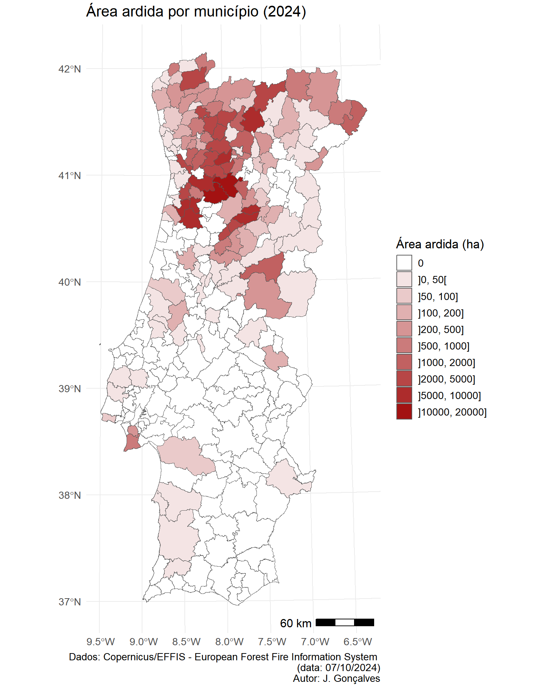
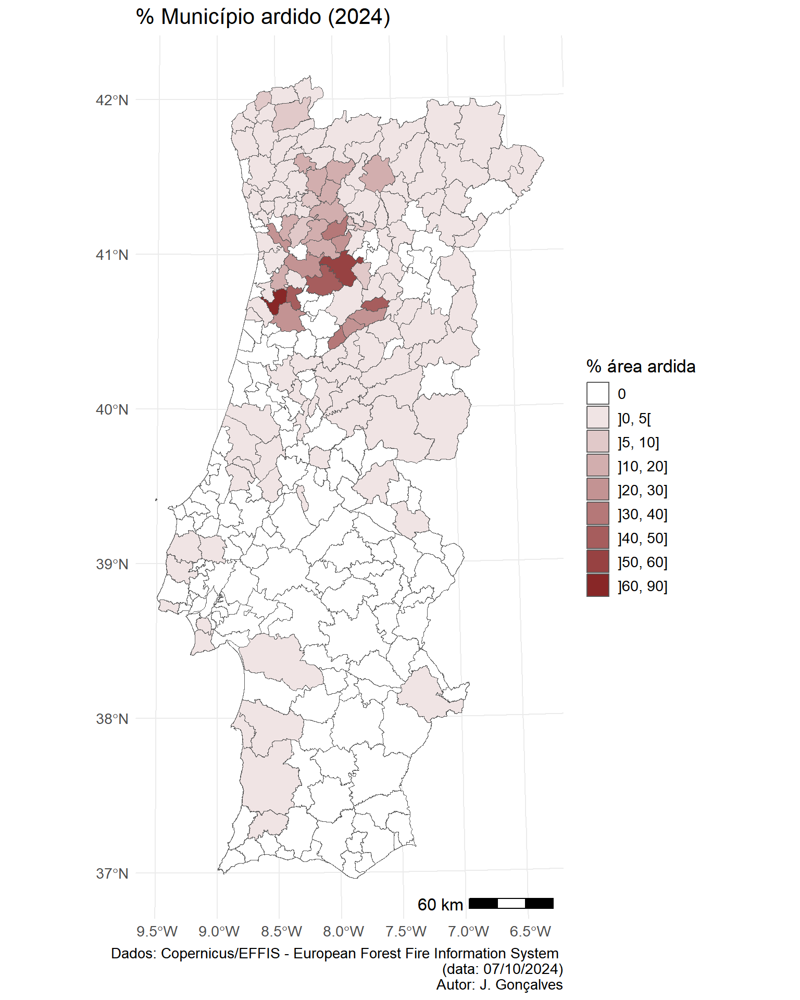
4. Área ardida em espaços de proteção/conservação
Nesta secção apresenta-se uma análise da área ardida em espaços de proteção e conservação em Portugal continental, abordando as diferentes redes e áreas de interesse. Esta análise está subdividida em três partes principais:
A primeira subsecção (4.1) incidirá sobre a Rede Nacional de Áreas Protegidas (RNAP), explorando a extensão dos incêndios em territórios que possuem um elevado valor ecológico, património natural e biodiversidade;
Na subsecção (4.2), será analisada a área ardida nos Sítios de Interesse Comunitário (SIC), integrados na Rede Natura 2000, com especial enfoque nos impactos sobre os habitats naturais protegidos;
Por fim, a subsecção (4.3) examinará as Zonas de Proteção Especial (ZPE), também parte da Rede Natura 2000, discutindo as áreas afetadas em locais designados para a conservação de aves e outras espécies prioritárias.
Esta análise visa avaliar os impactos dos incêndios nas áreas de maior relevância em termos de património natural com vista a suportar potenciais medidas de recuperação e prevenção nesses espaços.
4.1. Rede Nacional de Áreas Protegidas (RNAP)
| Sigla | Nome AP | Área ardida (ha) | % AP ardida |
|---|---|---|---|
| PPRSA | Serra da Aboboreira | 9434.4 | 46.4 |
| PPRPSP | Parque das Serras do Porto | 2315.5 | 38.8 |
| PNPG | Peneda-Gerês | 641.2 | 0.9 |
| PNM | Montesinho | 474.7 | 0.6 |
| PNDI | Douro Internacional | 227.9 | 0.3 |
| PNSE | Serra da Estrela | 98.8 | 0.1 |
| PNSC | Sintra-Cascais | 94.8 | 0.7 |
| PNRVT | Vale do Tua | 31.5 | 0.1 |
| PNAL | Alvão | 9.6 | 0.1 |
| PPLSSA | Serras do Socorro e Archeira | 7.6 | 0.6 |
| PNSAC | Serras de Aire e Candeeiros | 5.5 | 0.0 |
| RNDSJ | Dunas de São Jacinto | 0.5 | 0.1 |
4.2. Rede Natura 2000 - Sítios de Interesse Comunitário (SIC)
| Código SIC | Nome SIC | Área ardida (ha) | % sítio ardido |
|---|---|---|---|
| PTCON0025 | Montemuro | 10600.3 | 27.3 |
| PTCON0047 | Serras da Freita e Arada | 7930.1 | 27.7 |
| PTCON0003 | Alvão/Marão | 6951.4 | 11.8 |
| PTCON0059 | Rio Paiva | 6797.1 | 46.9 |
| PTCON0026 | Rio Vouga | 2119.9 | 75.8 |
| PTCON0027 | Carregal do Sal | 1523.6 | 16.1 |
| PTCON0001 | Peneda-Gerês | 1188.0 | 1.3 |
| PTCON0054 | Fernão Ferro/Lagoa de Albufeira | 846.6 | 19.6 |
| PTCON0002 | Montesinho/Nogueira | 486.8 | 0.5 |
| PTCON0039 | Serra d'Arga | 105.0 | 2.3 |
| PTCON0014 | Serra da Estrela | 98.8 | 0.1 |
| PTCON0008 | Sintra/Cascais | 94.8 | 0.6 |
| PTCON0053 | Moura/Barrancos | 45.9 | 0.1 |
| PTCON0061 | Ria de Aveiro | 29.5 | 0.1 |
| PTCON0060 | Serra da Lousã | 28.5 | 0.2 |
| PTCON0021 | Rios Sabor e Maçãs | 19.2 | 0.1 |
| PTCON0024 | Valongo | 17.2 | 0.7 |
| PTCON0015 | Serras de Aire e Candeeiros | 16.0 | 0.0 |
| PTCON0040 | Corno do Bico | 7.7 | 0.1 |
| PTCON0007 | São Mamede | 2.8 | 0.0 |
| PTCON0022 | Douro Internacional | 2.3 | 0.0 |
| PTCON0020 | Rio Lima | 1.9 | 0.0 |
| PTCON0037 | Monchique | 0.8 | 0.0 |
4.3. Rede Natura 2000 - Zonas de Proteção Especial (ZPE)
| Código ZPE | Nome ZPE | Área ardida (ha) | % sítio ardido |
|---|---|---|---|
| PTZPE0002 | Serra do Geres | 639.4 | 1.0 |
| PTZPE0003 | Montesinho/Nogueira | 487.2 | 0.5 |
| PTZPE0038 | Douro Internacional e Vale do Rio Águeda | 227.9 | 0.2 |
| PTZPE0045 | Mourão/Moura/Barrancos | 45.9 | 0.1 |
| PTZPE0004 | Ria de Aveiro | 28.0 | 0.1 |
| PTZPE0037 | Rios Sabor e Maçãs | 19.2 | 0.0 |
| PTZPE0049 | Lagoa Pequena | 15.5 | 22.6 |
| PTZPE0039 | Vale do Côa | 13.6 | 0.1 |
| PTCON0037 | Monchique | 0.8 | 0.0 |
5. Análise de grandes áreas ardidas
Síntese geral
Neste secção apresenta-se uma caracterização detalhada das grandes áreas ardidas com dimensão superior a 1,000 hectares, analisando a distribuição dos usos / coberto do solo em cada uma dessas áreas, a severidade, a afetação de áreas com estatuto de proteção/conservação entre outros aspetos.
No total, à data de 07/10/2024, foram encontradas 22 ocorrências com dimensão superior a 1,000 hectares, totalizando 133,335 hectares da área ardida em 2024 o que representa 83.2% do total anual.
A lista de grande incêndios é evidenciada na tabela a seguir por localidade e município(s) envolvido(s):
| Data | Semana | Localidade | Municípios | Área ardida (ha) | % do total anual |
|---|---|---|---|---|---|
| 2024-08-11 | 32 | São Martinho de Angueira | Miranda do Douro, Vimioso | 1625.1 | 1.0 |
| 2024-09-04 | 36 | São Jorge e Ermelo | Arcos de Valdevez | 1264.5 | 0.8 |
| 2024-09-13 | 37 | Barroca | Fundão, Pampilhosa da Serra | 1014.5 | 0.6 |
| 2024-09-13 | 37 | Souto Santa Maria, Souto São Salvador e Gondomar | Guimarães, Póvoa de Lanhoso, Fafe | 1113.7 | 0.7 |
| 2024-09-14 | 37 | Cavez | Cabeceiras de Basto, Ribeira de Pena | 3940.3 | 2.5 |
| 2024-09-14 | 37 | Sobradelo da Goma | Fafe, Póvoa de Lanhoso, Vieira do Minho, Guimarães | 1467.0 | 0.9 |
| 2024-09-15 | 37 | Albergaria-a-Velha e Valmaior | Albergaria-a-Velha, Águeda, Sever do Vouga, Oliveira de Azeméis, Vale de Cambra | 27182.7 | 17.0 |
| 2024-09-16 | 38 | Ancede e Ribadouro | Baião | 2421.2 | 1.5 |
| 2024-09-16 | 38 | Esmolfe | Penalva do Castelo, Mangualde, Sátão | 10797.5 | 6.7 |
| 2024-09-16 | 38 | Oliveira do Conde | Carregal do Sal, Nelas, Tábua, Oliveira do Hospital | 7774.0 | 4.8 |
| 2024-09-16 | 38 | Tendais | Cinfães | 1037.5 | 0.6 |
| 2024-09-16 | 38 | Águas Frias | Chaves | 1644.9 | 1.0 |
| 2024-09-17 | 38 | Alvadia | Vila Pouca de Aguiar, Ribeira de Pena, Vila Real | 2283.9 | 1.4 |
| 2024-09-17 | 38 | Freigil e Miomães | Cinfães, Resende | 2984.6 | 1.9 |
| 2024-09-17 | 38 | Paus | Resende, Lamego | 1912.1 | 1.2 |
| 2024-09-17 | 38 | Rendufinho | Póvoa de Lanhoso, Vieira do Minho | 1400.6 | 0.9 |
| 2024-09-17 | 38 | Sabroso de Aguiar | Vila Pouca de Aguiar | 1148.9 | 0.7 |
| 2024-09-17 | 38 | Sobreira | Gondomar, Paredes, Penafiel | 4806.0 | 3.0 |
| 2024-09-17 | 38 | Telões | Vila Pouca de Aguiar, Vila Real | 3710.3 | 2.3 |
| 2024-09-17 | 38 | Vila Garcia, Aboim e Chapa | Celorico de Basto, Amarante, Felgueiras | 3215.9 | 2.0 |
| 2024-09-17 | 38 | Várzea, Aliviada e Folhada | Baião, Amarante, Marco de Canaveses | 8133.1 | 5.1 |
| 2024-09-18 | 38 | Reriz e Gafanhão | Castro Daire, São Pedro do Sul, Arouca, Vila Nova de Paiva, Cinfães, Viseu | 42457.0 | 26.5 |
A distribuição destes incêndios por classe de uso/ocupação do solo é mostrada nas tabelas seguintes considerando os dois conjuntos de dados de referência COS conjuntural 2024 e a COS 2018:
| Classe de uso/coberto do solo COSc 2024 | Área (hectares) | % Área |
|---|---|---|
| Matos | 47126.6 | 35.4 |
| Eucalipto | 32283.5 | 24.2 |
| Veg. herbácea esp. | 14749.2 | 11.1 |
| Outras folhosas | 12760.6 | 9.6 |
| Pinheiro bravo | 10621.0 | 8.0 |
| Outras áreas agrícolas | 8625.4 | 6.5 |
| Sup. s/ vegetação | 3169.3 | 2.4 |
| Artificializado | 1484.9 | 1.1 |
| Culturas anuais out/inv | 1093.0 | 0.8 |
| Culturas anuais pri/ver | 988.3 | 0.7 |
| Outras resinosas | 262.1 | 0.2 |
| Pinheiro manso | 75.2 | 0.1 |
| Zonas húmidas | 8.1 | 0.0 |
| Sobreiro e azinheira | 4.6 | 0.0 |
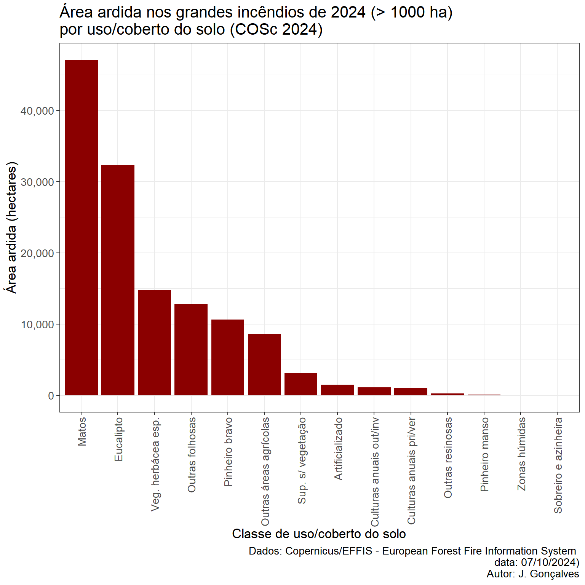
| Classe de uso/coberto do solo COS 2018 | Área (hectares) | % Área |
|---|---|---|
| Florestas de eucalipto | 36618.2 | 27.4 |
| Matos | 33714.2 | 25.3 |
| Florestas de pinheiro bravo | 25956.6 | 19.5 |
| Culturas temporárias de sequeiro e regadio | 7571.0 | 5.7 |
| Florestas de outras folhosas | 7561.6 | 5.7 |
| Florestas de outros carvalhos | 5673.2 | 4.3 |
| Mosaicos culturais e parcelares complexos | 2758.6 | 2.1 |
| Agricultura com espaços naturais e seminaturais | 2223.1 | 1.7 |
| Vegetação esparsa | 1649.6 | 1.2 |
| Tecido edificado descontínuo | 1413.6 | 1.1 |
| Florestas de espécies invasoras | 993.5 | 0.7 |
| Vinhas | 774.3 | 0.6 |
| Tecido edificado descontínuo esparso | 726.4 | 0.5 |
| Pomares | 652.6 | 0.5 |
| Rede viária e espaços associados | 647.0 | 0.5 |
| Florestas de outras resinosas | 644.5 | 0.5 |
| Pastagens melhoradas | 635.5 | 0.5 |
| Olivais | 435.5 | 0.3 |
| Pedreiras | 408.1 | 0.3 |
| Tecido edificado contínuo predominantemente horizontal | 380.3 | 0.3 |
| Indústria | 302.0 | 0.2 |
| Cursos de água naturais | 290.0 | 0.2 |
| Florestas de pinheiro manso | 242.6 | 0.2 |
| Pastagens espontâneas | 219.2 | 0.2 |
| Florestas de castanheiro | 187.6 | 0.1 |
| Culturas temporárias e/ou pastagens melhoradas associadas a olival | 157.1 | 0.1 |
| Rocha nua | 83.8 | 0.1 |
| Culturas temporárias e/ou pastagens melhoradas associadas a vinha | 68.2 | 0.1 |
| Instalações desportivas | 56.4 | 0.0 |
| Albufeiras de barragens | 54.5 | 0.0 |
| Áreas em construção | 47.9 | 0.0 |
| Outros equipamentos e instalações turísticas | 35.1 | 0.0 |
| Aterros | 33.4 | 0.0 |
| Espaços vazios sem construção | 27.1 | 0.0 |
| Florestas de azinheira | 24.2 | 0.0 |
| Florestas de sobreiro | 21.8 | 0.0 |
| Instalações agrícolas | 18.2 | 0.0 |
| Culturas temporárias e/ou pastagens melhoradas associadas a pomar | 10.9 | 0.0 |
| Equipamentos culturais | 10.5 | 0.0 |
| Comércio | 10.5 | 0.0 |
| Parques e jardins | 10.4 | 0.0 |
| Agricultura protegida e viveiros | 9.9 | 0.0 |
| Infraestruturas de tratamento de resíduos e águas residuais | 9.6 | 0.0 |
| Pauis | 8.1 | 0.0 |
| Tecido edificado contínuo predominantemente vertical | 7.3 | 0.0 |
| Infraestruturas para captação, tratamento e abastecimento de águas para consumo | 6.5 | 0.0 |
| Equipamentos de lazer | 5.2 | 0.0 |
| Lagos e lagoas interiores artificiais | 5.1 | 0.0 |
| Lixeiras e Sucatas | 4.9 | 0.0 |
| SAF de outras misturas | 3.9 | 0.0 |
| Cemitérios | 3.7 | 0.0 |
| Rede ferroviária e espaços associados | 2.8 | 0.0 |
| SAF de outros carvalhos | 2.7 | 0.0 |
| Infraestruturas de produção de energia renovável | 2.5 | 0.0 |
| Marinas e docas pesca | 1.9 | 0.0 |
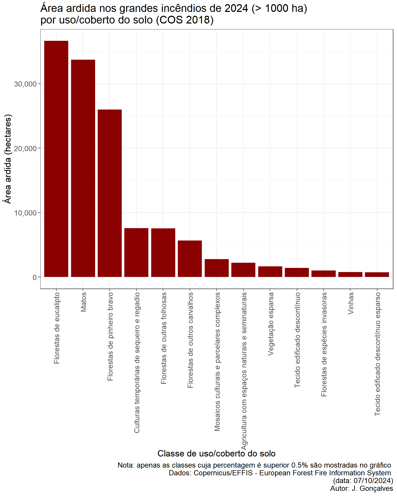
Severidade dos grandes incêndios de 2024
Aviso
Estes são resultados preliminares e ainda incompletos para algumas áreas devido à falta de imagens de satélite ou cobertura parcial de nuvens em algumas regiões.
Acesso/descarregamento dos dados de severidade
Os dados preliminares em formato raster GeoTIFF podem ser descarregados no seguinte link (com metadados): SPT_RBR_NBR_S2MSI_E2024_R003P003_32629_20240930_v02
A severidade da área ardida foi calculada a partir de imagens do satélite ótico Sentinel-2 utilizando o índice espectral Normalized Burn Ratio (NBR), que mede a diferença da reflectância da superfície terrestre entre as bandas do infravermelho próximo (NIR) e do infravermelho médio (SWIR).
\(NBR = \frac{NIR - SWIR}{NIR + SWIR}\)
O NBR é sensível a alterações na vegetação e no solo devidas ao fogo. Para avaliar a severidade do fogo, comparou-se o NBR pré-fogo (NBR pré) com o NBR pós-fogo (NBR pós), utilizando o indicador Relativized Burn Ratio (RBR). Este indicador permite uma quantificação mais robusta das mudanças no terreno, eliminando as variações relativas entre os diferentes tipos de vegetação. A fórmula do RBR é dada por:
\(dNBR = NBR_{pré} - NBR_{pós}\)
\(RBR = \frac{dNBR}{NBR_{pré} + 1.001}\)
Este cálculo foi aplicado em imagens de satélite antes e depois do fogo para produzir mapas de severidade da área ardida.
As classes de severidade para o indicador NBR/RBR foram obtidas através da análise das distribuições para os anos 2018 - 2023 com base nos produtos gerados pelo projeto SeverusPT (para o mesmo satélite e indicador de severidade). A partição das classes foi obtida pelos percentis da distribuição de 20%, 40%… a 80% para os valores de NBR/RBR superiores a zero:
| De | Para | Nível de severidade |
|---|---|---|
| [min] | 0 | Não ardido |
| 0 | 1455 | Muito baixa |
| 1455 | 2750 | Baixa |
| 2750 | 3801 | Média |
| 3801 | 4900 | Elevada |
| 4900 | [max] | Muito elevada |
Apresentam-se abaixo os resultados da distribuição da área ardida (em hectares) pelas classes de severidade para o indicador NBR / RBR:
| ID_EFFIS | Localidade | Municípios | Muito baixa (ha) | Baixa (ha) | Média (ha) | Elevada (ha) | Muito elevada (ha) | Área por estimar (ha) |
|---|---|---|---|---|---|---|---|---|
| 244928 | Reriz e Gafanhão | Castro Daire, São Pedro do Sul, Arouca, Vila Nova de Paiva, Cinfães, Viseu | 5032 | 6116 | 5175 | 5410 | 11821 | 6346 |
| 244927 | Albergaria-a-Velha e Valmaior | Albergaria-a-Velha, Águeda, Sever do Vouga, Oliveira de Azeméis, Vale de Cambra | 3316 | 6565 | 6265 | 4679 | 4180 | 961 |
| 243297 | Várzea, Aliviada e Folhada | Baião, Amarante, Marco de Canaveses | 1020 | 1020 | 832 | 1028 | 3455 | 0 |
| 243167 | Oliveira do Conde | Carregal do Sal, Nelas, Tábua, Oliveira do Hospital | 924 | 1422 | 1330 | 1203 | 1971 | 454 |
| 244169 | Sobreira | Gondomar, Paredes, Penafiel | 704 | 932 | 825 | 924 | 1124 | 0 |
| 243584 | Esmolfe | Penalva do Castelo, Mangualde, Sátão | 648 | 776 | 551 | 568 | 1116 | 6778 |
| 243152 | Freigil e Miomães | Cinfães, Resende | 609 | 475 | 329 | 362 | 861 | 0 |
| 243669 | Paus | Resende, Lamego | 81 | 117 | 143 | 228 | 933 | 365 |
| 241892 | São Jorge e Ermelo | Arcos de Valdevez | 51 | 61 | 104 | 266 | 764 | 0 |
| 243920 | Vila Garcia, Aboim e Chapa | Celorico de Basto, Amarante, Felgueiras | 626 | 725 | 586 | 446 | 564 | 0 |
| 243706 | Alvadia | Vila Pouca de Aguiar, Ribeira de Pena, Vila Real | 333 | 413 | 320 | 458 | 500 | 168 |
| 243150 | Ancede e Ribadouro | Baião | 436 | 499 | 361 | 330 | 578 | 0 |
| 243128 | Águas Frias | Chaves | 168 | 238 | 269 | 261 | 597 | 0 |
| 243921 | Telões | Vila Pouca de Aguiar, Vila Real | 156 | 204 | 177 | 267 | 531 | 2328 |
| 238220 | São Martinho de Angueira | Miranda do Douro, Vimioso | 250 | 284 | 261 | 341 | 442 | 0 |
| 243833 | Sobradelo da Goma | Fafe, Póvoa de Lanhoso, Vieira do Minho, Guimarães | 260 | 242 | 190 | 281 | 334 | 0 |
| 243798 | Rendufinho | Póvoa de Lanhoso, Vieira do Minho | 252 | 252 | 166 | 180 | 418 | 0 |
| 244073 | Tendais | Cinfães | 125 | 118 | 113 | 179 | 415 | 0 |
| 243131 | Sabroso de Aguiar | Vila Pouca de Aguiar | 122 | 230 | 199 | 208 | 333 | 0 |
| 242853 | Barroca | Fundão, Pampilhosa da Serra | 130 | 231 | 214 | 236 | 188 | 0 |
| 243117 | Souto Santa Maria, Souto São Salvador e Gondomar | Guimarães, Póvoa de Lanhoso, Fafe | 252 | 303 | 171 | 149 | 164 | 0 |
| 244052 | Cavez | Cabeceiras de Basto, Ribeira de Pena | 878 | 1349 | 1045 | 168 | 18 | 0 |
Apresentam-se abaixo os resultados da distribuição da área ardida (em %) pelas classes de severidade para o indicador NBR / RBR:
| ID_EFFIS | Localidade | Municípios | % Muito baixa | % Baixa | % Média | % Elevada | % Muito elevada | % Área por estimar |
|---|---|---|---|---|---|---|---|---|
| 241892 | São Jorge e Ermelo | Arcos de Valdevez | 4.09 | 4.92 | 8.37 | 21.33 | 61.28 | 0.00 |
| 244073 | Tendais | Cinfães | 13.16 | 12.42 | 11.88 | 18.84 | 43.70 | 0.00 |
| 243669 | Paus | Resende, Lamego | 4.35 | 6.24 | 7.65 | 12.21 | 49.99 | 19.56 |
| 243297 | Várzea, Aliviada e Folhada | Baião, Amarante, Marco de Canaveses | 13.87 | 13.87 | 11.31 | 13.97 | 46.99 | 0.00 |
| 243128 | Águas Frias | Chaves | 10.98 | 15.50 | 17.56 | 17.05 | 38.91 | 0.00 |
| 238220 | São Martinho de Angueira | Miranda do Douro, Vimioso | 15.86 | 18.00 | 16.54 | 21.61 | 27.99 | 0.00 |
| 243131 | Sabroso de Aguiar | Vila Pouca de Aguiar | 11.19 | 21.03 | 18.18 | 19.07 | 30.53 | 0.00 |
| 243798 | Rendufinho | Póvoa de Lanhoso, Vieira do Minho | 19.88 | 19.84 | 13.11 | 14.20 | 32.97 | 0.00 |
| 243833 | Sobradelo da Goma | Fafe, Póvoa de Lanhoso, Vieira do Minho, Guimarães | 19.90 | 18.50 | 14.53 | 21.52 | 25.55 | 0.00 |
| 243152 | Freigil e Miomães | Cinfães, Resende | 23.12 | 18.02 | 12.46 | 13.73 | 32.67 | 0.00 |
| 244169 | Sobreira | Gondomar, Paredes, Penafiel | 15.62 | 20.66 | 18.30 | 20.49 | 24.93 | 0.00 |
| 243706 | Alvadia | Vila Pouca de Aguiar, Ribeira de Pena, Vila Real | 15.18 | 18.84 | 14.60 | 20.92 | 22.80 | 7.66 |
| 243167 | Oliveira do Conde | Carregal do Sal, Nelas, Tábua, Oliveira do Hospital | 12.65 | 19.48 | 18.21 | 16.47 | 26.98 | 6.22 |
| 244928 | Reriz e Gafanhão | Castro Daire, São Pedro do Sul, Arouca, Vila Nova de Paiva, Cinfães, Viseu | 12.61 | 15.33 | 12.97 | 13.56 | 29.63 | 15.91 |
| 242853 | Barroca | Fundão, Pampilhosa da Serra | 13.01 | 23.15 | 21.42 | 23.63 | 18.79 | 0.00 |
| 243150 | Ancede e Ribadouro | Baião | 19.77 | 22.65 | 16.37 | 14.97 | 26.23 | 0.00 |
| 243920 | Vila Garcia, Aboim e Chapa | Celorico de Basto, Amarante, Felgueiras | 21.24 | 24.60 | 19.88 | 15.14 | 19.14 | 0.00 |
| 244927 | Albergaria-a-Velha e Valmaior | Albergaria-a-Velha, Águeda, Sever do Vouga, Oliveira de Azeméis, Vale de Cambra | 12.77 | 25.28 | 24.13 | 18.02 | 16.10 | 3.70 |
| 243117 | Souto Santa Maria, Souto São Salvador e Gondomar | Guimarães, Póvoa de Lanhoso, Fafe | 24.24 | 29.17 | 16.43 | 14.34 | 15.81 | 0.00 |
| 243921 | Telões | Vila Pouca de Aguiar, Vila Real | 4.27 | 5.56 | 4.82 | 7.28 | 14.49 | 63.57 |
| 243584 | Esmolfe | Penalva do Castelo, Mangualde, Sátão | 6.21 | 7.44 | 5.28 | 5.44 | 10.69 | 64.93 |
| 244052 | Cavez | Cabeceiras de Basto, Ribeira de Pena | 25.40 | 39.01 | 30.22 | 4.85 | 0.53 | 0.00 |
5.1. São Martinho de Angueira (Miranda do Douro / Vimioso)
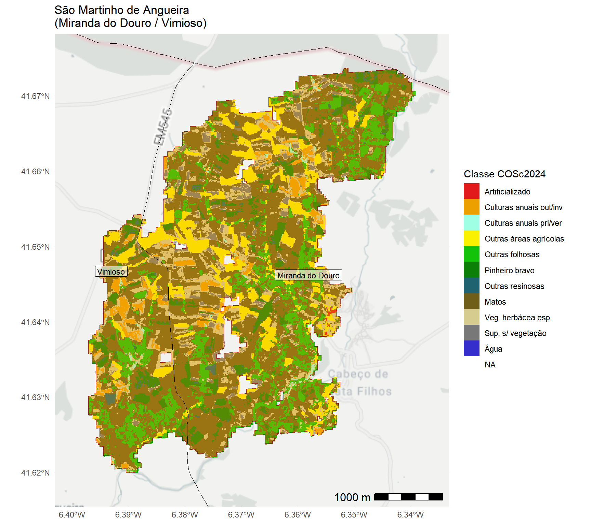

Total área ardida (Fonte: EFFIS): 1,625 hectares
Data/hora do fogo: 2024-08-11 01:09:00
Área ardida em RNAP (Fonte: ICNF): 0 hectares
Área ardida em SICs/ Rede Natura 2000: 0 hectares
Área ardida em ZPEs/ Rede Natura 2000: 0 hectares
Número de residentes/indivíduos potencialmente afetados (Fonte: INE): 60
Número de alojamentos potencialmente afetados: 81
Número de edifícios potencialmente afetados (Fonte: MS Buildings Footprint): 109
Área ardida por município
Municipio | Area_ha | Percentagem |
|---|---|---|
Miranda do Douro | 1,279.0 | 78.6 |
Vimioso | 349.1 | 21.4 |
Área ardida por classe de uso/coberto do solo (COSc 2024, DGT)
Classe COSc2024 | Area_ha | Percentagem |
|---|---|---|
Matos | 745.6 | 45.8 |
Outras folhosas | 241.0 | 14.8 |
Outras áreas agrícolas | 186.0 | 11.4 |
Veg. herbácea esp. | 185.6 | 11.4 |
Pinheiro bravo | 123.9 | 7.6 |
Sup. s/ vegetação | 63.1 | 3.9 |
Culturas anuais out/inv | 57.1 | 3.5 |
Outras resinosas | 16.4 | 1.0 |
Culturas anuais pri/ver | 8.2 | 0.5 |
Artificializado | 1.3 | 0.1 |
Área ardida por classe de uso/coberto do solo (COS 2018, DGT)
Classe_COS2018 | Area_ha | Percentagem |
|---|---|---|
Matos | 498.7 | 30.6 |
Florestas de pinheiro bravo | 299.3 | 18.4 |
Florestas de outros carvalhos | 253.3 | 15.6 |
Culturas temporárias de sequeiro e | 162.5 | 10.0 |
Pomares | 135.0 | 8.3 |
Agricultura com espaços naturais e | 82.2 | 5.0 |
Florestas de outras folhosas | 69.6 | 4.3 |
Florestas de castanheiro | 52.1 | 3.2 |
Pastagens espontâneas | 39.0 | 2.4 |
Pastagens melhoradas | 18.0 | 1.1 |
Mosaicos culturais e parcelares | 10.2 | 0.6 |
Florestas de outras resinosas | 4.1 | 0.2 |
Olivais | 1.9 | 0.1 |
Tecido edificado contínuo | 1.8 | 0.1 |
Vinhas | 0.2 | 0.0 |
SAF de outros carvalhos | 0.1 | 0.0 |
Área (hectares) e % ardida por classe de severidade (NBR/RBR, Sentinel-2)
Muito baixa (ha) | Baixa (ha) | Média (ha) | Elevada (ha) | Muito elevada (ha) | Por apurar (ha) |
|---|---|---|---|---|---|
250.2 | 284 | 261 | 341.1 | 441.7 | 0 |
% Muito baixa | % Baixa | % Média | % Elevada | % Muito elevada | % Por apurar |
|---|---|---|---|---|---|
15.9 | 18 | 16.5 | 21.6 | 28 | 0 |
Afetação potencial de rios e ribeiros (fonte: EU-Hydro River Network Database)
Ordem_Strahler | Comprimento_Km |
|---|---|
1 | 5.2 |
2 | 0.2 |
3 | 2.3 |
Afetação potencial de estradas e caminhos (fonte: OpenStreetMap)
TipoOSM | Tipo | Comprimento_Km | Percentagem |
|---|---|---|---|
track | caminho agrícola/florestal | 60.0 | 72.7 |
track_grade4 | caminho_nível4 | 6.7 | 8.2 |
path | trilho | 5.3 | 6.5 |
tertiary | estrada terciária | 4.7 | 5.7 |
track_grade3 | caminho_nível3 | 3.0 | 3.7 |
track_grade5 | caminho_nível5 | 1.3 | 1.6 |
track_grade2 | caminho_nível2 | 0.7 | 0.8 |
residential | estrada residencial | 0.6 | 0.7 |
unclassified | estrada não classificada | 0.2 | 0.2 |
Notas de rodapé
Este conjunto de dados foi atualizado (27/09/2024) com a área correspondente à Paisagem Protegida Regional da Serra da Aboboreira (PPRSA).↩︎
A ordem de Strahler classifica rios com base na hierarquia dos seus afluentes: rios de nível 1 não possuem afluentes, dois rios de nível 1 formam um de nível 2, dois de nível 2 formam um de nível 3, e assim sucessivamente até ao nível 6. Neste sistema os diferentes níveis refletem a complexidade da rede fluvial; rios de nível 1 são pequenos cursos de água sem afluentes, e à medida que os afluentes se unem, formam rios de níveis superiores, com cada nível a representar um aumento na quantidade de água transportada e na área de drenagem.↩︎